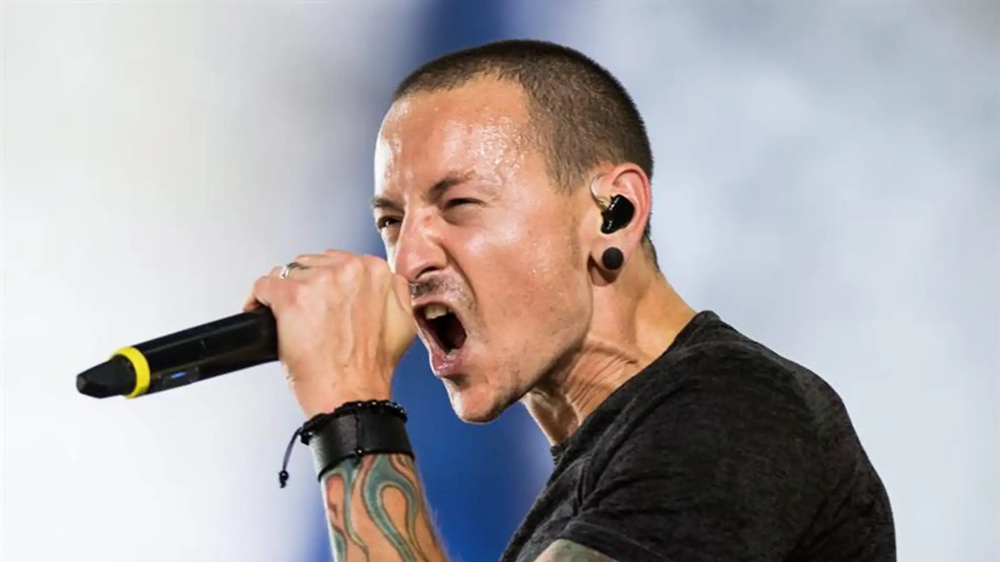

Desde mi punto de vista, linking park es uno de los mejores artistas que ha existido nunca ya que es reconocido mundialmente.
Tiene varios albunes con certificacion de de disco de oro y Hibryd Teory alcanzo el puesto dos en el billboard 200 y fue el septimo disco mas vendido de los 2000.
A pesar de que su vocalista principal y compositor Chester Benington se suicido, su exito no desaparecio y en su regreso llego una nueva cantante.